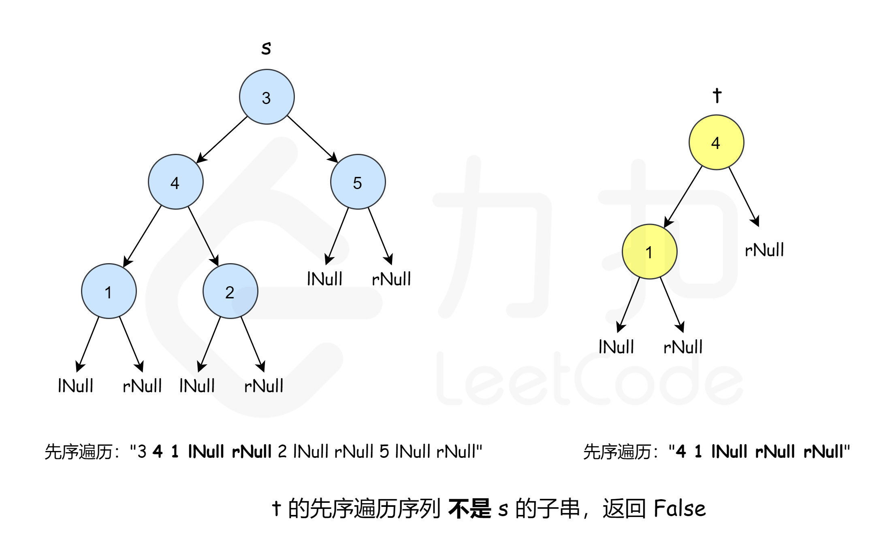

| 创建时间： | 2020/05/07 17:40 |
| 作者： | lzr |
题目链接：leetcode
这道题可以有三种思路，让我来一一分析。
首先呢，根据题目要求，子串必须完全一样才行。那么在树 s 中，通过任意一种遍历，先找到一个值和 t 的根节点相同的节点，然后再比较这两个节点对应的那棵树是否相同，就可以得到答案。
代码：
public boolean isSubtree(TreeNode s, TreeNode t) {
if (t == null) return true;
if (s == null) return false;
return isSubtree(s.left, t) || isSubtree(s.right, t) || equals(s,t);
}
/**
* 判断两个树是否一样
*/
private boolean equals(TreeNode s,TreeNode t){
if(s==null&&t==null)return true;
if(s==null||t==null)return false;
if(s.val!=t.val)return false;
return equals(s.left,t.left)&&equals(s.right,t.right);
}
执行用时：4ms
内存消耗：39.2mb
(有关kmp算法在其他的博客里有)
我们知道，二叉树可以表达成一个字符序列，比如说用井号#代表null。
而且，结构相同的树，他们用先序遍历转化成字符串后也一定相同。
这里要注意的点是，转化为字符串的时候一定不能忽略null，一定要把null也保存出来。否则就会出现题目样例2中的情况。
（借用一下官方题解的图片）

先来个java的正常代码：
class Solution {
public boolean isSubtree(TreeNode s, TreeNode t) {
StringBuilder sb1 = new StringBuilder();
StringBuilder sb2 = new StringBuilder();
treeToString(s,sb1);
treeToString(t,sb2);
return sb1.indexOf(sb2.toString())>-1;
}
private void treeToString(TreeNode t,StringBuilder sb){
if(t==null)return;
sb.append((char)t.val);
if(t.left==null)sb.append('l');
else treeToString(t.left,sb);
if(t.right==null)sb.append('r');
else treeToString(t.right,sb);
}
}
这里KMP没有自己写，利用了java的库函数，也算是懒省事了。
执行用时 :5 ms
内存消耗 :39.4 MB
可以看到其实这种方法并没有比第一种方法快。但毕竟是一种思路。
再放一个js黑科技(一行代码)
var isSubtree = (s, t) => (JSON.stringify(s).indexOf(JSON.stringify(t)))>-1;
哈希，其实思路很简单，把每个子节点都hash了，然后比较有没有一样的。感觉对于这道题来说完全没有什么意义。。
对于两棵树，如果左右子树的大小相同，才有比较的意义。也就是说，增加一个判断条件，可以对第一种思路进行优化。这里借用网上那位老哥的代码。
class Solution {
// 判断两棵二叉树是否相等
private boolean isSame(TreeNode root1, TreeNode root2) {
if (root1 == null) {
return root2 == null;
}
if (root2 == null) {
return false;
}
return root1.val == root2.val && isSame(root1.left, root2.left) && isSame(root1.right, root2.right);
}
private boolean isFoundSame = false;
private int tCount;
// 递归计算二叉树s每棵子树的节点数，并同时寻找是否有子树与t相等
private int calcCount(TreeNode root, TreeNode t) {
if (isFoundSame) {
return 0;
}
if (root == null) {
return 0;
}
int count = calcCount(root.left, t) + calcCount(root.right, t) + 1;
if (count == tCount && isSame(root, t)) {
isFoundSame = true;
return 0;
}
return count;
}
// 计算二叉树t的节点个数
private int calcTCount(TreeNode root) {
return root == null ? 0 : calcTCount(root.left) + calcTCount(root.right) + 1;
}
public boolean isSubtree(TreeNode s, TreeNode t) {
tCount = calcTCount(t);
calcCount(s, t);
return isFoundSame;
}
}